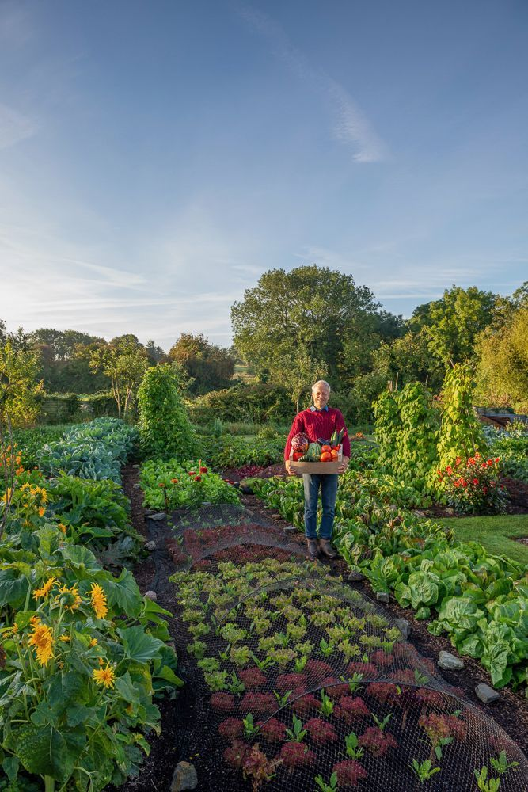

Overview
Gardening involves growing plants, vegetables, or flowers, either in a yard or small spaces like balconies.
Benefits
Mental Health Benefits
Gardening provides stress relief and boosts mood.
Physical Benefits
Encourages light physical activity and connection with nature.
Materials and Requirements
To get started with gardening, you'll need a few basic materials:
- Gardening tools
- Seeds
- Soil
- Space for plants
Getting Started
For beginners, start with easy-to-grow plants like succulents or herbs. As you grow more comfortable, expand your garden with vegetables or flowers.
Levels of Engagement
Progress from small potted plants to designing a full garden landscape. The more effort you put in, the more rewarding the results.
Social and Community Aspects
Join gardening groups or participate in community gardening projects to share knowledge, gain inspiration, and connect with fellow enthusiasts.

Fun Facts and Trivia
Did you know? Gardening can burn up to 300 calories an hour! It's a fun and effective way to stay active.
 Start planting today—grow your own sanctuary.
Start planting today—grow your own sanctuary.